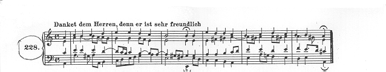

MUS
329J - Assignment One
Bach
Chorale 228
Due by 5 P.M. Monday, September
18,
2006
Use any text editor to create a Csound score file of Bach Chorale #228.
(See instructions below.) Save this as an ASCII text file named bach228.sco. You
should test your score using Sample Orchestra #2, to make sure it works
properly and that the notes and rhythms are all correct. Then name it following
the usual convention (e.g., abcbach.sco) and turn in via the digital dropbox.

Instructions and Tips:
- The score format should be
the same as that of Sample Score #2 on page 31 of the Pinkston Csound
Primer. Hence the first note in the top line of the chorale might be coded
as follows:
|
;insno
|
start
|
dur
|
amp
|
pch
|
rise
|
decay
|
func#
|
chanfac
|
|
i01
|
0
|
1
|
5000
|
8.09
|
.1
|
.2
|
1
|
.25
|
- Use a different instrument
number for each part (voice) of the 4-part chorale. Make the top (soprano)
line i01, the second (alto) i02, the third (tenor) i03, and the fourth
(bass) i04.
- Code all the notes for the
soprano in order, then all the notes for the alto, etc., so as to take
advantage of the Csound "Carry Feature" (Primer p. 28ff), which
is canceled whenever the instrument number changes. (In other words, don't
enter the chorale as a succession of 4-note chords, but as 4 complete
melodic lines, written out one after the other.)
- Use p9 (left channel
factor for stereo placement) to spread the 4 voices across the stereo
space.
- Quarter notes in the
chorale should be given 1 beat, so eighth notes get .5 and sixteenths .25.
Hence, a dotted eighth note would get .75 beats; a quarter note tied to an
eighth would get 1.5 beats. Use a t-card (see Primer p. 30) to set the
tempo for the chorale. Be sure to put the t-card first in the score.
- Remember that the maximum
possible amplitude with 16-bit samples is 32767, so make sure that the sum
of all notes playing simultaneously at any point in the chorale never
exceeds that amount per channel. A safe maximum amplitude for each voice
is probably 8000. [Optionally, you may modify Sample Orc #2 to
utilize the Csound ampdb function and enter note amps in dB.]
- Use a separate oscil
function for each part, as well. Each function should be generated with an
f-card having a different number in p1 (i.e., f01, f02, f03, f04). Use Gen
10 to create your function tables and make the size of each table 512
locations. For example:
|
;Oscil function for soprano (i01)
|
|
f01 0 512 10 100 50 33 25 20
|
|
;Oscil function for alto (i02)
|
|
f02 0 512 10 100 30 50 10 0 50
|
…and so forth. Feel free to experiment,
but use at least some fundamental and don't use too many high partials, or things
will start to sound pretty strange. Fgenie is helpful for trying things out
quickly. Hint: before you get too creative, test the chorale with straight sine
waves (maybe with a little 2nd partial, too), just to be sure you
got all the pitches right and that everything is playing in the correct
octave.
- Hint for the
non-musicians: Whenever a pitch has an accidental (sharp or flat sign) in
a measure, that pitch remains altered for the remainder of the measure,
unless the accidental is canceled with a natural sign. For example, the
tenor part in the third full measure has a g# on the second beat. There
are 2 more g's in the tenor later on in that measure which don't have the
# in front of them, but they are still g#'s!
- Second hint for the
non-musicians: Those strange signs (dot with a frown over or smile under
it) over/under the third beat in the third measure and over/under the last
chord in the piece are called fermatas. They indicate that the note
should be held longer than is written. I suggest at least doubling the
written duration of the chords in both spots.
- Final hint: Don't be
tempted to use the Csound score + operator when coding the start times of
the chorale. For one thing, if you make one little mistake somewhere, the
whole rest of the line will be off. For another, it's very convenient to
be able to quickly find, say, the 17th beat in every part. It's
hard to do that if all you see is a string of + signs in the start fields
of a long line of notes.